🕰 Visszaemlékezés 1970 ... 2018
 |
[memories / visszaemlékezés]
#gyerekkor
#család
#élet
#visszaemlékezés
#képek
#hun
|
[memories / visszaemlékezés]
#gyerekkor
#család
#élet
#visszaemlékezés
#képek
#hun
Nagyon nehezem vettem rá magamat, hogy ezt a részt végül összeírjam, pedig már nagyon régóta terveztem, de ahogy most már látszik, szépen lassan azért csak-csak összeszedtem magamat és azokat a dolgokat is, amiket itt meg terveztem már nagyon, nagyon régóta osztani, furcsa módon első körben csak önmagammal. 😀
Ha ne adj isten valaki más is valahogy mégis idekeveredne, beleolvasna és még esetleg ezek után is lenne bármi hozzászólása vagy akár heJesírási javaslata, akkor azt persze bátran tegye majd meg a lap legeslegalján!
Kezdjük is akkor ezt a “történetet” egészen az elejéről!
Tartalom:
[1970 - 1976]
[1976 - 1984]
1970., május 5. - 1976., szeptember 1.
Amennyire én tudom, a születésem tényleg nem lehetett egy “leányálom” anyámnak - főleg úgy, hogy láttam már közelről pár születést -, aki az elmondásai alapján nagyon megkínlódott velem. Majdnem elvérzett a szülésben, mivel én sem segítettem nagyon a folyamatot, azaz nem nagyon akartam magamtól valahogy erre a világra megszületni. Magához a születésemhez az akkori technikák közül - ha igazak az elmesélt történetek és miért ne lennének már azok -, akkor a szülőfogó nevű frappáns kis eszközt használták fel segítségként. Így, már néhány év eltelte után, bátran kijelenthetjük, hogy nagyon sokat nem ártottak végül ezzel a szerkezettel nekem, bár már egyre többször érzem azt, hogy az én életem is véges lesz. ✞ Esténként puffadok, sokszor zsibbad már reggelente a bal kezem, többször megmagyarázhahatlanul nekem is fáj már a fejem (korábban ilyenem sem volt) és összevissza dobog gyakran, nekem már nagyon zavaró módon a “kis” szívem… és amúgy is eleget láttam, éltem már. Ha az elét elég kegyes lesz hozzám, akkor nem apám halála előtt megyek majd el! De ne ugorjunk még ennyire a történet végére!!!
A szülés után pár hónappal már a Mohácsi Városi Bölcsőde (7700 Mohács, Dózsa György utca 9.) műintézmény tagja lettem. Magáról a bölcsiről nem sok emlékem maradt meg, de anyám által sokat emlegetett történet alapján már 6 hónaposan szobatiszta voltam… 🤣


 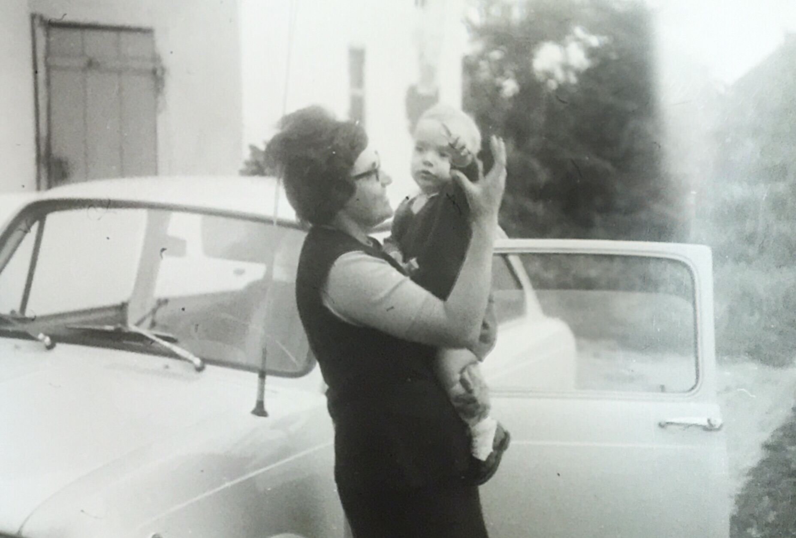
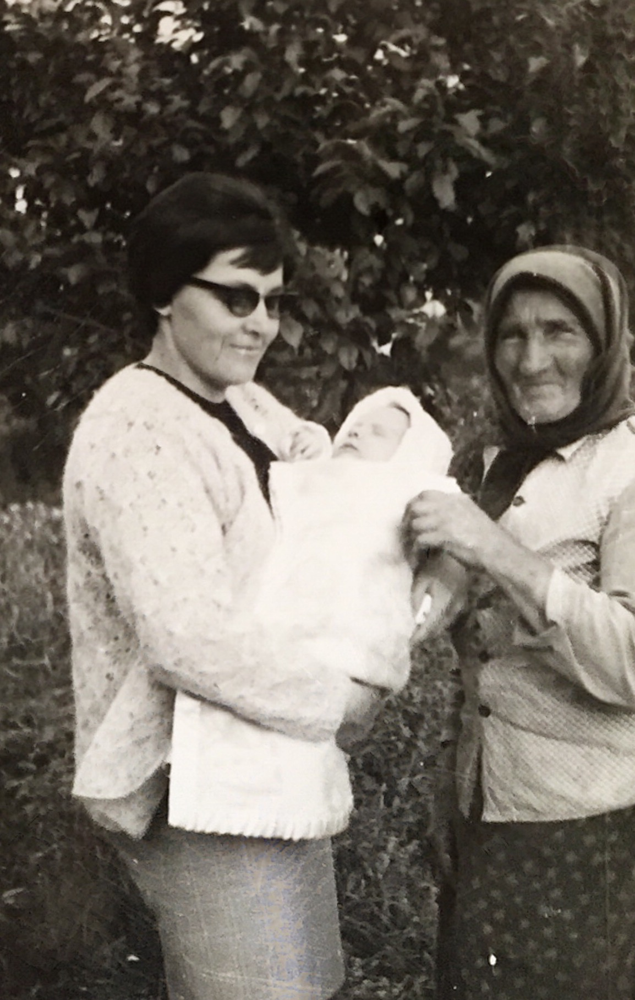
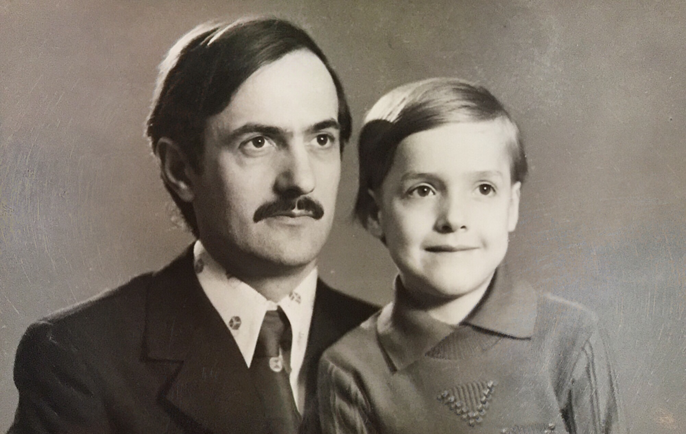
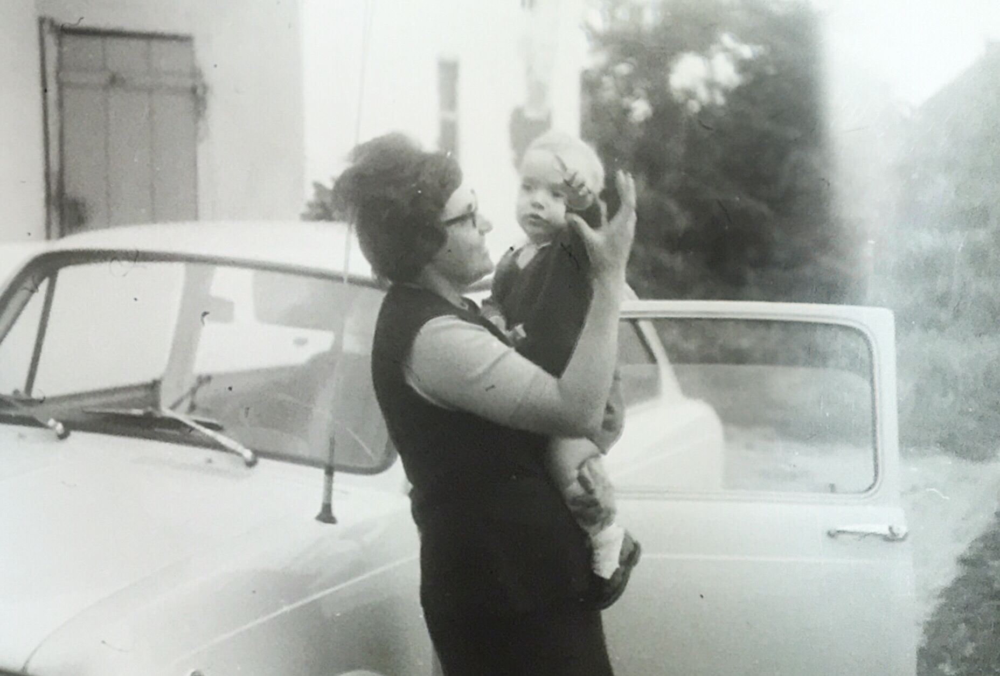
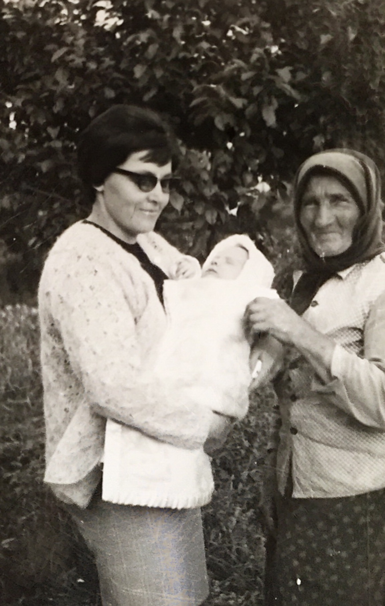
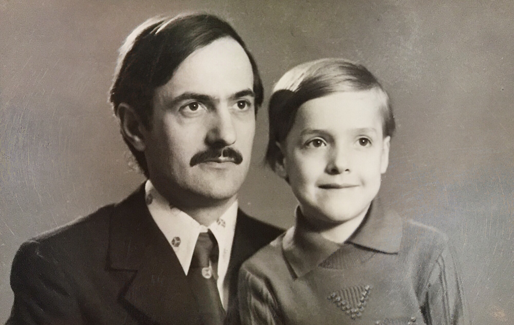


Innen persze egyenes út vezetett tovább a Mohácsi Korsós utcai Óvodába (7700 Mohács, Korsós utca ?.). Az az emlékem van meg, hogy volt egy nyár, amikor pár hétre másik óvodába kellet átköltözni pár hétre, és a csoportomból senki más nem jött velem pont abba a óvodába ahova én mentem át erre az ideiglenes pár hetes időre. Kicsit megviselt ez a dolog akkor, főleg ha így, ennyi év után is még mindig így emlékszem rá. Vannak olyan emlékképeim is, hogy az ovi udvarának egyik falán volt egy kis lyuk a kis összekötő utcára és azon keresztül beszélgetünk a nem ovis, de velünk egykorú, de közel lakó gyerekekkel, illetve az is, hogy volt egy év, amikor valahogy az óvónénik elfelejtették év végén visszadni a korábban év közben elkobzott játékokat. Nekem az van meg, hogy volt pár mini Tom és Jerry-s képregénykönyvem, ami így végül náluk végezte.
A képek és az emlékek alapján a következő személyekre emlékszem vissza:
És akkor jöjjenek a bölcsis és az ovis képek ehhez az időszakhoz:


 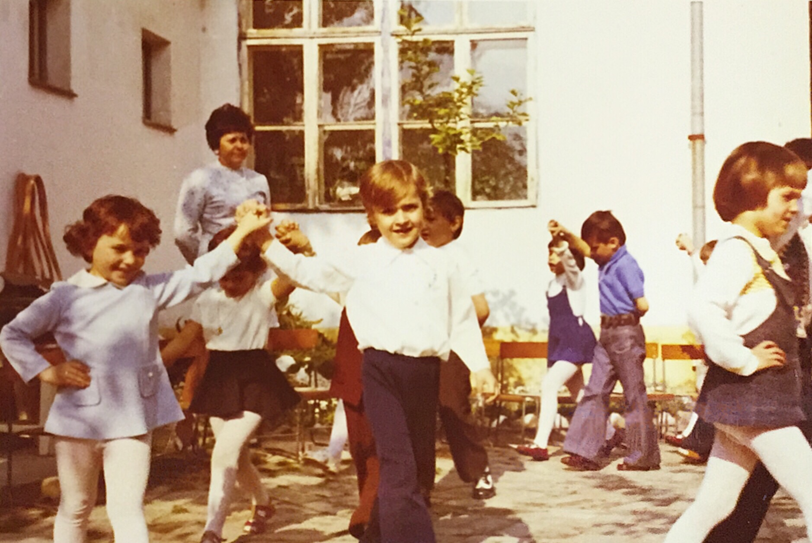
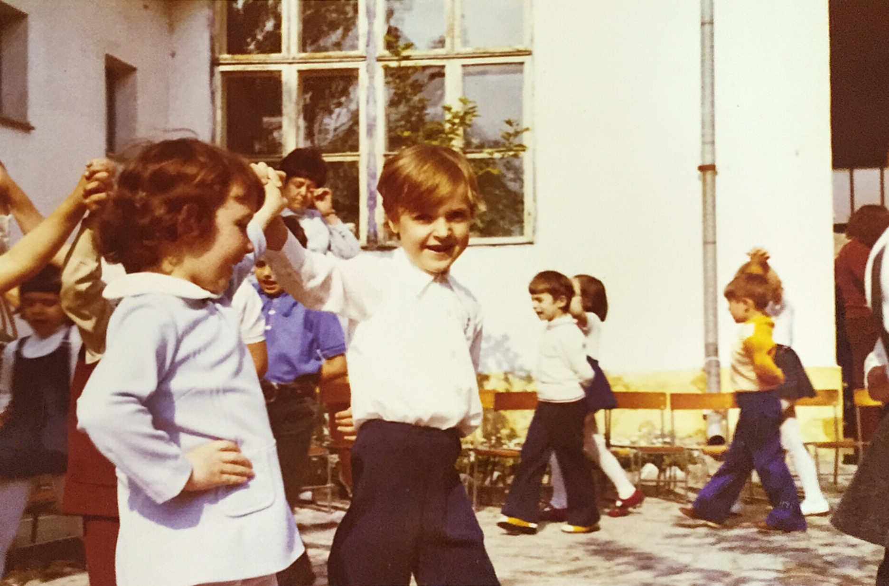
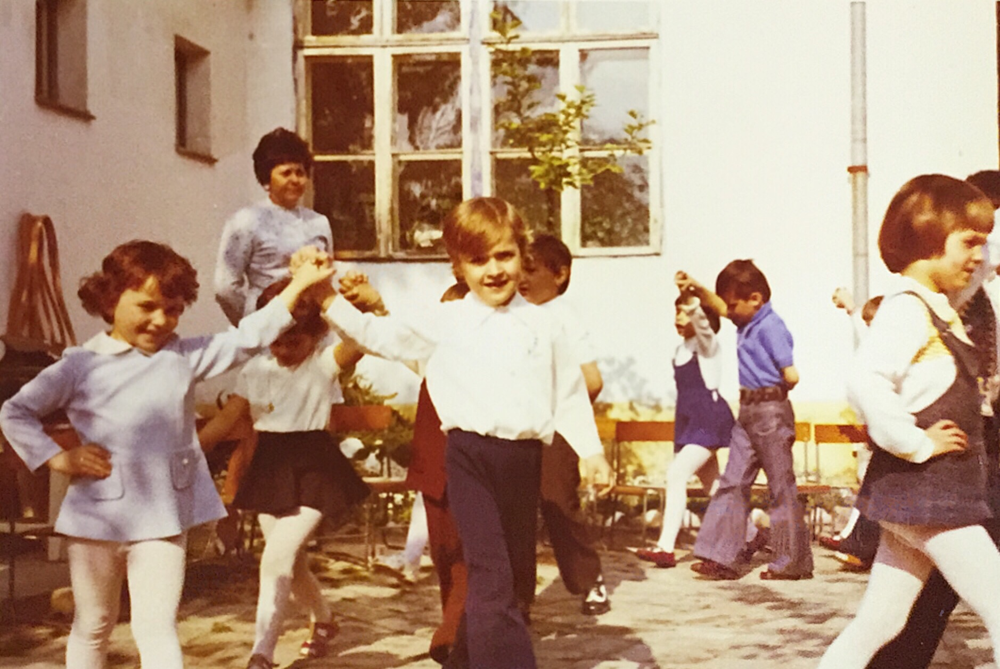
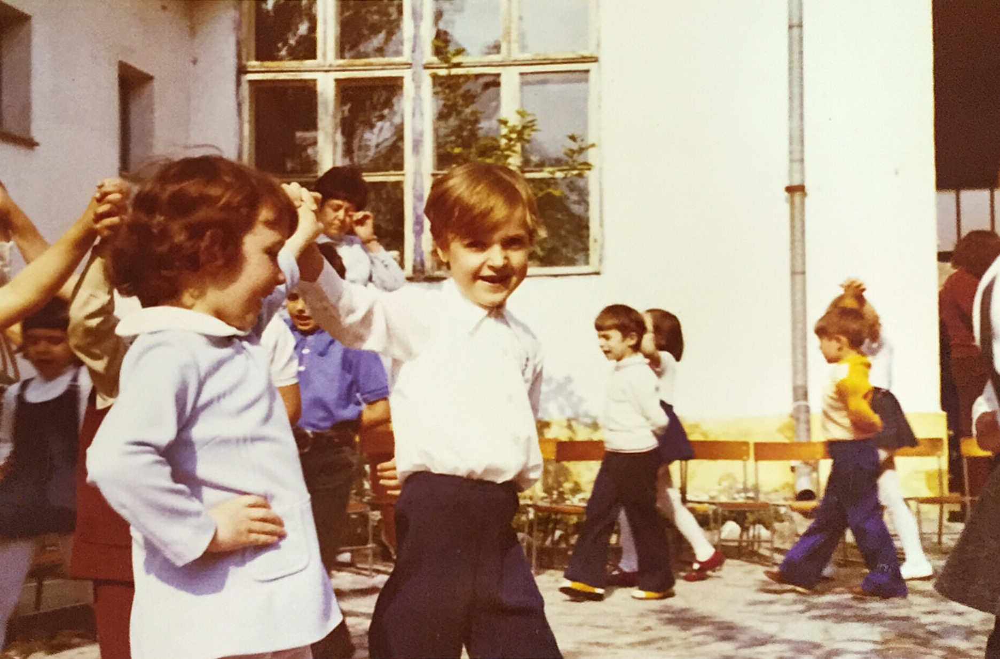
 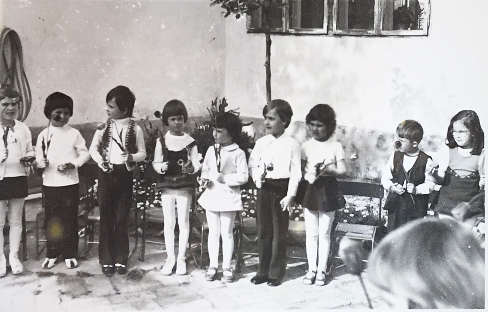
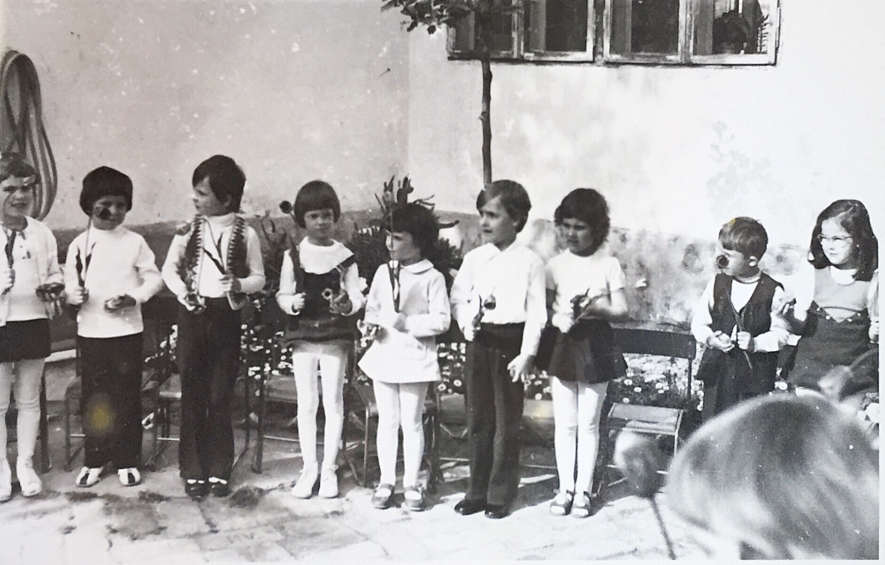
1976., szeptember 1. - 1984., szeptember 1. (általános iskola)
Mohács Térségi Általános Iskola - Széchenyi Iskola - Széchenyi Téri Általános Iskola (7700 Mohács, Széchenyi tér 17.)
1…4: 1976-77 (1.), 1977-78 (2.), 1978-79 (3.), 1979-80 (4.)
Mindenféle különösebben nagy stressz nélkül kezdődött nekem az általános iskola, ahova talán ha 1 hétig kísérgetett anyukám reggelente és utána -, mint mindenki más abban az időben - őnjáró lettem, nem úgy, mint a mai “modern” gyerek. Nagyon emlékszem még az alsós időkből Szökőts Béla tanárúrra, amint tesiórákat és talán még a rajzórákat is (???) tartja nekünk és szuperül tud fütyűlni mindenféle extra technikákkal. Sajnos nekem azóta sem sikerült így megtanulnom fütyülni. :-(
Ausztriából kaptam egy nagyon menő narancssárga iskolatáskát és egy menőségben is hozzá illő vadi új tolltartót (az akkori kornak megfelelően töltőtollal). A táskát még valamikor az év elején Matics Tibi véletlenül tussal leöntötte (rajzórán ő ült mögöttem) és onnantól egy szép nagy sötét folt éktelenkedett tovább ezen a gyönyörű iskolatáskán. Az első sokk után ez valahogy többé már nem zavart. Sokáig megmaradt ez a táska és amikor nem használtam már az iskolában, akkor játékokat tartottam, cipeltem benne.
Ebben az időben már voltak Koh-I-Noor Versatil töltőceruzák is, amit általában azok a szülők kapták a munkahelyükön, akik irodában dolgoztak, ahonnan hazavitték és odaadták a gyereküknek.
Emlékszem még, hogy a Tolbuhin utcai lakásunk belső udvarában volt egy “játszótér”, ahol rengeteget bigéztünk link1 link2 és amikor valaki a lakók közül megcsinálta/tta a ping-pong asztalt, focikapukat és talán valami röplabdapályát is, amikhez a helyi halászok fonták a hálókat, akkor ezekkel is játszottunk. Közben lekezdődött a műszaki bolt építkezése és akkor az építkezési területre jártunk valami háborús játékot játaszni, amihez csipeszpuska / pisztoly kukoricával és az aluminium karnisból készített fúvócső voltak a fegyferek. A fúvócsövezésre, az u szöges csúzlizásra és az úgyszintén az aluminium karnisból készített mini ágyukkal való kísérletezés, a ping-pong labdából készített füstbomba és a benzisen ampulákkal robbangatás is jó móka volt, így utólag.
Akikkel összejártam ebben az időben azok: a Kalocsai testvérek, de leginkább Lacika, Kalotai Péter, Husz Zoltán aztán ott voltak még a Pereszlényi testvérek (Zsolt (), László), akikkel sokáig egy lépcsőházban laktunk és talán az ő helyükre költöztek a Kalotaiék egy időre.
Valamikor itt történt még meg az az ominózus eset is, hogy Szűcs Gábor (akivel eddig a pontig elég jó volt a kapcsolatom és ha változott is idővel, akkor nem magától ettől az esettől változott meg) osztálytársam a napközi WC-jében úgy lökte meg a felyem a mosdókagylóhoz, hogy az egyik felső, középső metszőfogam egyik sarka letört. Ez az eset azóta is rendesem beragadt az emlékezetembe és sokszor bevillan. Nagyon mély és nagyon rossz emléket hagyott bennem. A jobb oldali képen már látszik ennek a balsesetnek a nyoma.
Volt egy nyár, amikor a nyári napközibe levittem (nem tudom, hogy ez mennyire volt előtte leegyeztetve???) a család hordozható magnóját, egy Boney M. kazettával a Fogadalmi Nagytemplom mögé és ott vagánykodtam vele.
Sanyo Cassette Type Recorder Model M1530a Sanyo Cassette Type Recorder Model M2522 Sanyo Cassette Tape Recorder Model M2511 Philips N2221 Cassette Recorder
VIDEOTON Munkácsy color
4…8
Már felsősök lehettünk, amikor elkezdtünk a MHSZ (Magyar Honvédelmi Szövetség) keretein belül működő modellező klubba / szakkörbe járni, a Vörösmarty utcába, az akkori művház udvarába Mangold Ferenc, Feri bácsihoz. Abban az időben ez volt a legjobb elfoglaltás, amit el tudok képzelni. A bátyám már évekkel korábban odajárt. A sok balsafa, a ragasztó szaga, maga a klubb, maga a műhely és a társaság nagyon jó emlékeket ébreszt még most is bennem. Ha ott a klubb keretein belül nem is sikerült, de valamikor, valamilyen napra kaptam egy A1-es összeszerelhető repülőmdelt ajándékba (a nagy mohács főutcán lévő játékboltból), amit otthon teljes egészében sikerült összeszerelni. Ez a repülőt valamikor sikerült is reptetni a mohácsi vásártér közelében lévő valamelyik nagy mezőn. Volt is pár model, ami beszállt a házak közé és talán olyan is volt, ami sosem lett meg többet. Érdekesség még, hogy amikor végleg bezárták a klubbot, akkor pár gép hozzánk került az udvari tárolónkba, amiknek az alkatrészeit (szárny, törzs) egy adott pillantaban anyám karónak használt el a ketünkben. Szép volt látni ezeket a gépeket a földbe dugva. Nem tudom, hogy pontosan kik jártak akkor még oda, de ott voltak pár alkalommal a Pereszlényi testvérek és a végefelé pedig Kulutácz Tamás volt még ott utolsóként, akit én még ismertem.
Itt volt még egy “kemény” pratizánakciójuk a szüleimnek, amikor is előzetes bejelentés és mindenféle egyeztetés nélkül valamelyik nap bevittek Pécsre és ott megcsináltattak rajtam egy orrmandula műtétet. Ez még az a fajta műtét volt, amikor beültetik a kedves, aranyos gyerkőcöt a valamilyen segéd ölébe, aki az egyik legváratlanabb pillanatban összekulcsolja a saját lábaival a gyerek lábait, kezeivel, pedig lefogja a kezeit, majd hátulról/oldalról valaki suttyomban egy éteres gézzel elaltaja. Innen meg már jön a szájon át kapirgálós móka, ami a művelethez még kell…
1980-81
Zeneiskola
1981-82
1982-83
1982., szeptember 14.
1983., nyara Svédország? Atari 2600 konzol. (Asteroids-ra emlékszem nagyon.)
1983-84
Az utolsó áltiskolás évekből az az emlékem maradt még meg nagyon, hogy Csete Béla és Szalai Attila osztálytársaimmal hatalmasakat bringáztunk a suli körül és a városban is. Volt egy alkalom, amikor Béla és Szasza bemásztak az iskola óvóhelyébe és kicsórtak két db gázálarctáskát/szimatszatyrot. Akkor ez egy nagyon félelmetes mozzanat volt, utólag mégmindig azt gondolom, hogy ezzel nagyon vagányak voltak. Nagyon emlékszem még arra, hogyha megéheztünk, akkor simán tudtunk venni a főutcában lévő Lila presszóban (vagy hogy is hívták) egy kis vagy nagy zsíroskenyeret. Volt ott még hot-dog is, de az akkoriban még “megfizethetetlen” volt.
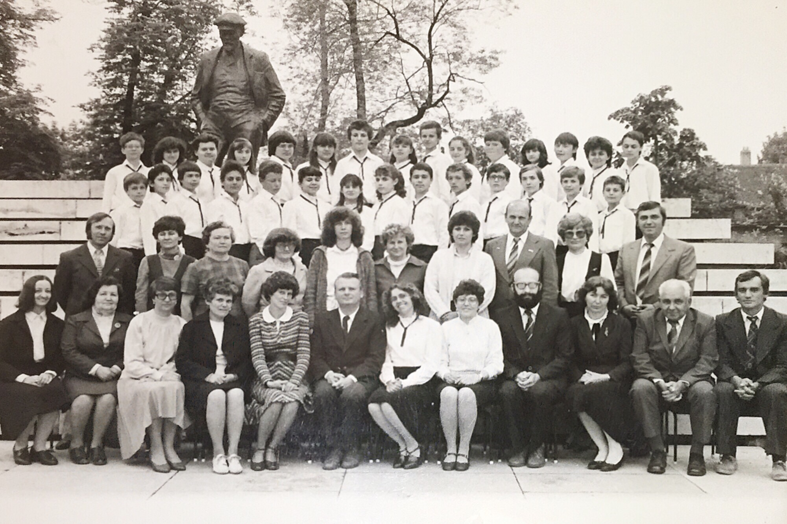
 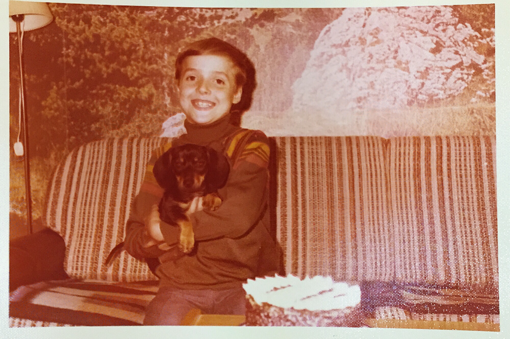
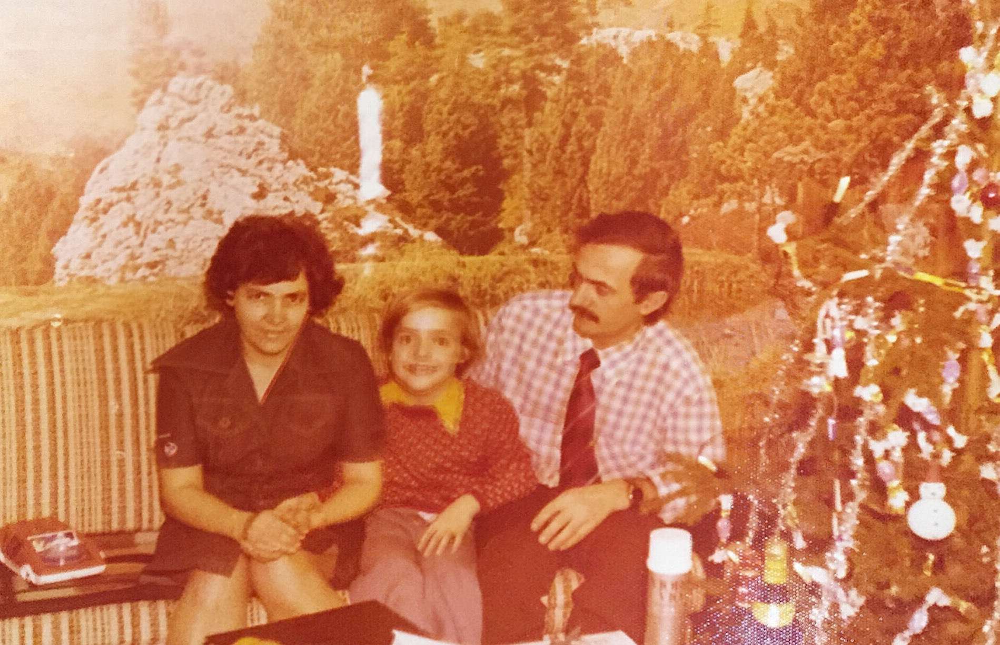
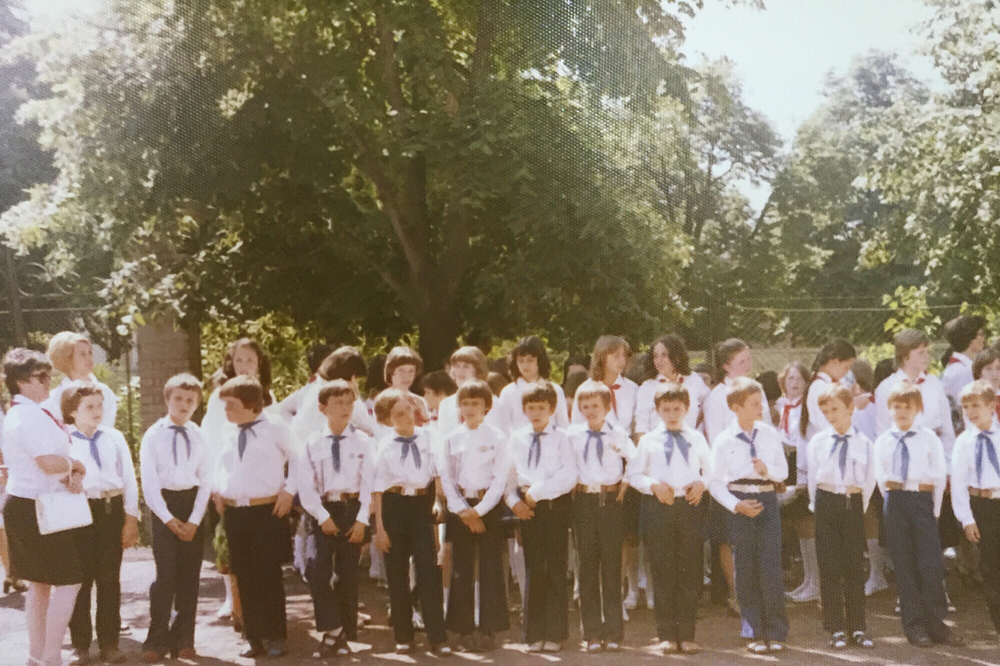
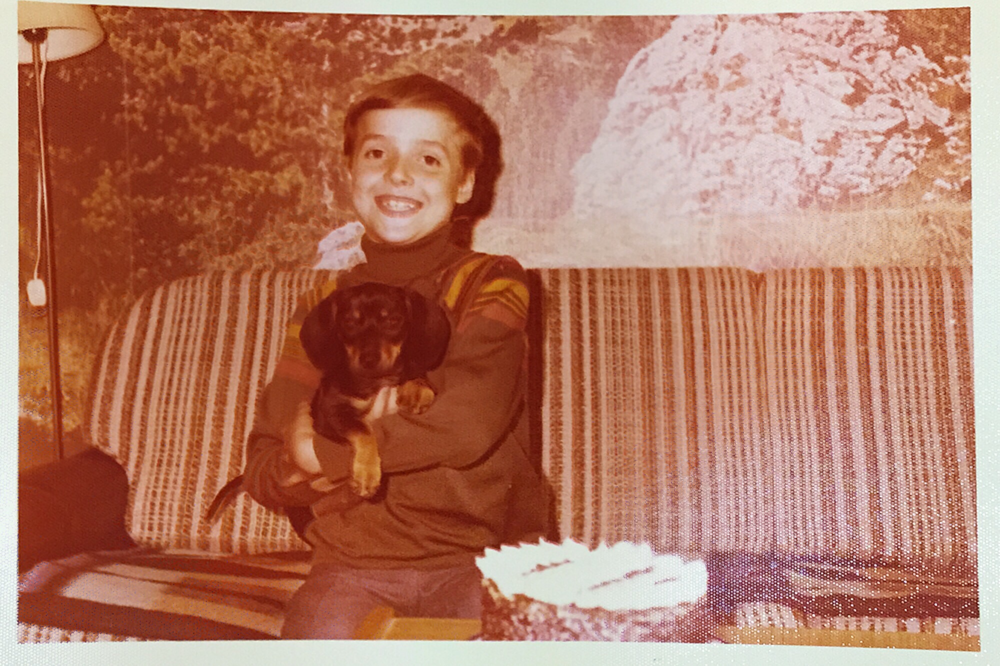
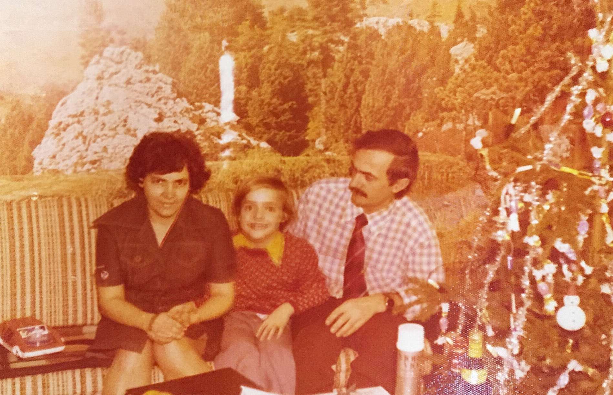
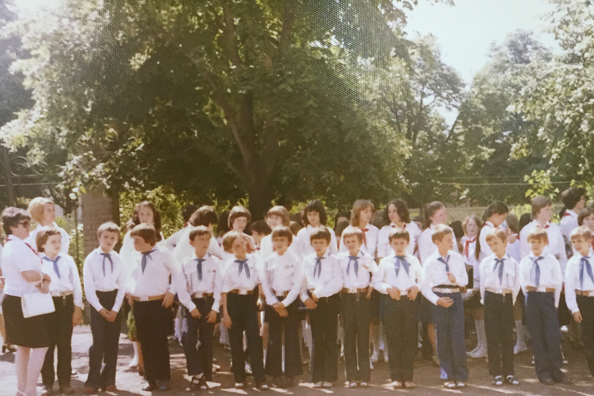

VIDEOTON RC4602 OCR
Valamikor itt költöztünk át a Tolbuhin utcai (ma Szentháromság utca) emeletesházból a Tanácsház utcai (ma Városház utca) még ma is “eredeti, akkori” állapotában álló családi házunkba.
Videoton RM 4630-al és a Poptarisznya hallgatásával indultam neki az új szobámnak.
Pif, Asterix, Talpraesett Tom, Mozaik, Hahota, Alfa, IPM magazin
Illetve olyan családban nöttem fel, ahol vol már digitális multiméter (Leader Digital-Multimeter LDM-851), jelgenerátor (Leader Signal Generator LSG-17), frekimérő (Sinclair PFM200), Weller páka és még minden más akkor csodaszámba menő (vidéken meg főleg) kütyü.
Videoton Super Star 12 TV (TC 1612)
Akai AJ-350H
1984., szeptember 1. - 1988., szeptember 1. (gimnázium)
Kisfaludy Károly Gimnázium, Mohács
- 1984-85
Zeneiskola vége, de innen már másfajta zenei érdeklődés indult meg és ezen a környeken került a családba egy Sinclair ZX Spectrum 48K (ami később egy németországból behozott Spectrum+ dobozzal plusszá alakult és egy kicsit később kapott még egy Kempstion joystick illesztőt és egy 80K Rádiótechniká-ból épített lapozót)
- 1985-86
A Duna 1985-ben fagyott be utoljára teljesen Mohácsnál.
Balázsy Eszter
RFT Proxima 408 + ORION HS-9 Mambó + orosz 27kg-os “Hi-Fi” lemezjátszó
Ezen a nyáron már biztosan megvolt a család első és nagyon sokáig még meglévő videómagnója egy nem is akármilyen sötét Panasonic NV-430.
Balaton. Izzadásgátló stift
- 1986-87
Ilyen volt anno az 1986–87-es istenigazi nagy tél! Oszd meg ha visszaemlékszel még rá http://0-24.org/index.php/2017/12/06/ilyen-volt-anno-az-1986-87-es-istenigazi-nagy-tel-oszd-meg-ha-visszaemlekszel-meg-ra/
- 1987-88
Atyámtól kaptam egy Élysée Series 60 (METALLIC GRAY) töltőtollat Pécsen a nagy Nagy Lajos király útjai papírboltban. Ezzel írtam a “szuper” érettségimet a gimiben.
1988., szeptember 1. - 1991., augusztus 1. (főiskola)
1988-89
Egy SHARP Double Cassette Twin Mechanism WQ-T222 magnóval kezdtem meg a főiskolát, amit még Bécsben vettünk a nyáron. Nagyon szerettem volna egy WQ-T252-es modellt, és úgy emlékszem, hogy volt is a boltokban, de mégsem engedték a szüleim. Böröcz Pistiéknek volt ilyenjük.
1989-90
90 nyarán kaptam életem első Levi’s 501-es farmerét és farmerdzsekiét Németországban. Valahol itt kapott apán a Grundingos haverjától talán egy sérült AIWA kismagnót
Ebben az évben egy Videoton Tünde TV-vel gazdagítottam a szobát.
1990-91
1991., augusztus 1. - 1997., február (M.O.F.A.)
1992., január
Arról, hogy a szívek összetörnek (Márai Sándor: Füves könyv)
“De pontosan úgy, mint a dalokban, melyeket a kávéházi chansonénekesnők énekelnek. S a dalok tanulsága mindig annyi, hogy az összetört szíveket nem lehet többé eggyéragasztani. Az életben is ennyi a tanulság. Ha egy ember egyszer bizalommal, föltétlen érzésekkel közeledett valakihez, s érzéseit megsértették, „szívét összetörték”, soha többé nem tud igazi bizalmat, feltétlen odaadást érezni egy másik ember iránt. Nincs érzékenyebb anyag a földön, mint az emberi anyag. Képtelen arra, hogy elfeledjen egy sértést, mellyel lelkét vagy érzéseit illették. S bármiféle baráti vagy szerelmi találkozást hoz is még számára az élet, gyanakvó marad, minden kapcsolat torz és gonosz játékalkalom lesz számára, örökké bosszút akar. Ilyen az ember. Vigyázz, ha ilyen megsértett szívűekkel állasz szemközt: nem tudod őket megengesztelni. S nincs az a türelem, bölcsesség, nagylelkűség, szenvedély, mely az ilyen csalódott szíveket nyugtatni tudja.”
1992., június Hajni
1993., február. 1994. február katonaság (Szentendre, Baja) Slezák Vanda (https://www.facebook.com/vandamaci)
Képek katonaság
1995., június 27., Laurie Anderson: The nerve bible “https://www.youtube.com/embed/KYnezeqB9Q0”
Levi’s 501 Commercial 96 https://www.youtube.com/watch?v=VcMZMjxydWQ
1997., február - 2004., május (Credit Lyonnais, Societe Generale, Schneider Electric)
- március Suzanne Vega a Vörösmarty Művházban?
1998 Bp Bécs Atlanta Memphis Chattanuga Gatlinburg Birmingham Rock city mountains New Orleans Lake Pont chartrain Dallas Memphis Cincinaty New York Bécs Bp
2004., május 1. - 2014., október. USER Tanácsadó Kft. majd USER Rendszerház Kft.
2005 PowerBook G4
2006 MacBook (2006, Intel GMA950)
New York
2011 MacBook Pro 2011
2012 Bp London Miami Homestead Everglades Keywest Fort Lauderdale Orlando Cape canaveral Miami Bp
- október 6. hétfő Laurie Anderson
2015., január 1. - (SCSS Kft., Effective Group Zrt.)
MacBook Pro (Retina, 13-inch, Mid 2014)
2015 Bp London Boston Capecod Albany Niagara Ittaca Harisburg Lanchester Shanon doah Washington Philadelphia New York Savannah Bp
2016 Bp London Boston Machester, NH North Convay, NH Acadia, ME Bar Harbour, ME Saint John, NB Halifax, NS Fredericton, NB Quebec, QE Montreal, Ottawa, Bp